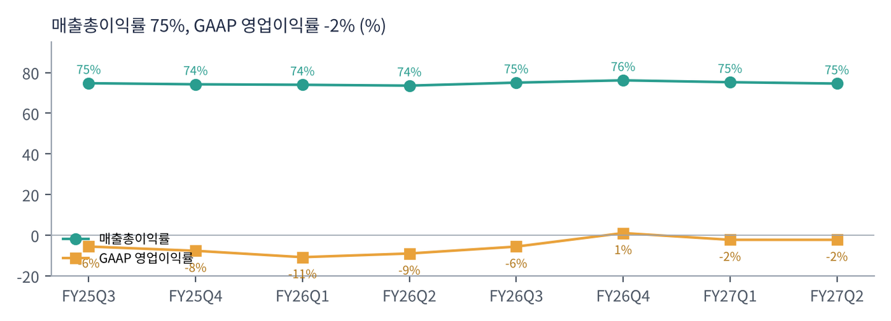

크라우드스트라이크는 클라우드 기반 사이버 보안 회사다. 노트북·서버에 설치하는 가벼운 '센서'로 해킹을 탐지하고 막는 엔드포인트 보안(EDR)에서 출발해, 클라우드 보안·아이덴티티 보안·차세대 보안 로그 분석(SIEM)·위협 정보·관리형 탐지 서비스(MDR)까지 넓혔다. 2024년 7월 소프트웨어 업데이트 오류로 전 세계 윈도우 PC 수백만 대를 멈추게 한 '7월 19일 사고'를 겪었지만, 고객 이탈은 예상보다 작았다. 2026년 주식 분할을 해 주가는 분할 후 기준이다.
| 항목 | 내용 |
|---|---|
| 종목 | CrowdStrike Holdings, Inc. (CRWD) · 사이버 보안 소프트웨어 · 2011년 설립 · 본사 텍사스주 오스틴 |
| 경영진 | 조지 커츠 창업자 겸 CEO / 버트 포드베어 CFO |
| 시가총액 | 약 $2,221억 (트레이딩뷰, 11/6 종가 기준). GAAP 이익이 작아 PER은 의미 없음 |
| 최근 분기(2Q FY27) | 매출 $14.7억(+26%), ARR $58.4억, 잉여현금 $3.8억 |
| 모듈 채택률 | 구독 고객 중 6개 이상 모듈 51%, 7개 이상 35%, 8개 이상 26% |
| 분기(회계) | 매출 | 매출총이익률 | GAAP 영업이익 | GAAP 순이익 | 영업현금 | 특이 사항 |
|---|---|---|---|---|---|---|
| FY25 3Q | $10.1억 | 74.8% | -$0.6억 | -$0.2억 | $3.3억 | 7월 사고 비용 |
| FY25 4Q | $10.6억 | 74.2% | -$0.8억 | -$0.9억 | $3.5억 | |
| FY26 1Q | $11.0억 | 74.0% | -$1.2억 | -$1.0억 | $3.8억 | 구조조정 |
| FY26 2Q | $11.7억 | 73.6% | -$1.1억 | -$0.7억 | $3.3억 | |
| FY26 3Q | $12.3억 | 75.0% | -$0.7억 | -$0.3억 | $4.0억 | |
| FY26 4Q | $13.1억 | 76.2% | $0.1억 | $0.6억 | $5.0억 | GAAP 흑자 전환 |
| FY27 1Q | $13.9억 | 75.3% | -$0.3억 | $0.3억 | $5.9억 | |
| FY27 2Q | $14.7억 | 74.6% | -$0.3억 | $0.05억 | $5.3억 | 순신규 ARR 최대 |

매출은 분기마다 5~6%씩 꾸준히 늘었다. 2년 동안 $10.1억에서 $14.7억으로 46% 성장했다. 성장률은 20%대 초중반으로 안정적이고, 2분기부터는 신규 계약이 빨라지고 있다. 매출보다 앞서 움직이는 순신규 ARR이 +51% 늘었다는 것은 6~12개월 뒤 매출 성장률이 높아질 수 있다는 신호다.

GAAP 적자의 대부분은 주식 보상이다. GAAP 영업손실 -$0.3억과 비GAAP 영업이익 $3.7억의 차이(약 $4억)가 주식 보상과 인수 관련 비용이다. 현금흐름 기준으로는 매출의 26%를 잉여현금으로 남기는 회사다.

| 항목 | 3Q FY27 | FY27 |
|---|---|---|
| ARR | $61.84~61.88억 | $66.03~66.12억 |
| 매출 | $15.23~15.29억 | $59.91~60.11억 |
| 비GAAP 영업이익 | $3.73~3.76억 | $14.97~15.08억 |
| 비GAAP EPS | $0.31 | $1.25~1.26 |
트레이딩뷰 CRWD 일봉 300개(2025.8 ~ 2026.11.6, 주식 분할 반영)와 주봉으로 계산했다. 결론부터 말하면 2026년 5월부터 시작된 강한 상승 추세(2월 $86 → 10월 $287)가 처음으로 깊게 조정받는 중이다. 이번 6종목 중 200일선 위에 있는 유일한 종목이다.


위: 주봉 재구성 차트. 아래: 트레이딩뷰 일봉 캡처(작도 없이 이동평균선·볼린저밴드만 표시).
| 이동평균 | 값 | 종가 대비 | 해석 |
|---|---|---|---|
| 5일선 | $232.3 | -6.6% | 11월 첫 주 -14% |
| 20일선 | $245.3 | -11.6% | |
| 50일선 | $243.8 | -11.0% | 20일선과 겹침 |
| 100일선 | $219.5 | -1.2% | 지금 시험 중인 지지선 |
| 200일선 | $170.2 | +27.4% | 장기 추세 건재 |
주봉 흐름: 2025년 하반기 $100~140 → 2026년 2월 소프트웨어 업종 'AI 대체 우려' 매도로 $86 연저점 → 5월부터 AI 보안 수요 부각으로 $114 → $183(5주 연속 상승) → 7월 $218 → 8월 말 2분기 실적 후 $229 → 9~10월 $287(10/6 신고가) → 10월 둘째 주 -17%, 11월 첫 주 -14%, 장중 $213 → $216.9 마감.
| 규칙 | 기준 | 현재 값 | 신호 |
|---|---|---|---|
| 장기 추세 필터 | 종가 vs 200일선 | $216.9 > $170.2 | 매수 |
| 중장기 교차 | 50일선 vs 200일선 | $243.8 > $170.2 | 매수 |
| 단기 교차 | 20일선 vs 50일선 | $245.3 > $243.8 | 매수 |
| 돈키언 채널 | 55일 고가 $287.0 / 저가 $181.2 | 중간값 $234.1 아래 | 매도 |
| 1개월 모멘텀 | 21거래일 수익률 | -17.5% (기준 $263.0) | 매도 |
| 3개월 모멘텀 | 63거래일 수익률 | -3.7% (기준 $225.2) | 매도 |
| 6개월 모멘텀 | 126거래일 수익률 | +64.4% (기준 $131.9) | 매수 |
| 12개월 모멘텀 | 252거래일 수익률 | +62.4% (기준 $133.5) | 매수 |
| 종합 (8개 평균) | +0.25 | 중립 강세 | |
해석: 추세 신호 3개와 6·12개월 모멘텀이 모두 매수다. 단기 모멘텀만 꺾였다. 다만 20일선($245.3)이 50일선($243.8)을 아주 조금 앞서 있어 며칠 안에 단기 교차가 매도로 바뀔 가능성이 크다(점수 0). 14일 ATR $14.8(6.8%).
| 가격 | 무엇이 바뀌나 | 의미 |
|---|---|---|
| $225 | 3개월 기준가 | 회복 시 매수 전환 → 점수 +0.5 |
| $234 | 돈키언 중간값 | 회복 시 점수 +0.75 |
| $170 | 200일선 | 이탈 시 장기 추세 꺾임 |
| 구분 | 가격대 | 근거 |
|---|---|---|
| 저항 2 | $257 ~ 263 | 10월 셋째 주 고점, 1개월 기준가 |
| 저항 1 | $225 ~ 245 | 3개월 기준, 돈키언 중간값, 20·50일선 |
| 지지 1 | $200 ~ 220 | 100일선, 9월 박스($204~214) |
| 지지 2 | $181 ~ 190 | 8월 저점, 55일 저점 |
기본 판단: 펀더멘털이 가장 깨끗한 종목의 첫 조정. 이번 6종목 중 부채로 투자하지 않고, 수주가 아니라 반복 매출(ARR)로 성장하며, 신규 수요가 가속하는 유일한 회사다. 문제는 가격이다. 시가총액 $2,221억은 FY27 매출 가이던스의 약 37배다. 그래서 '좋은 회사의 조정'으로 보고 지지선에서 나눠 사는 전략이 맞다.
| 가격대 | 시나리오 | 대응 |
|---|---|---|
| $280 이상 | 신고가 재시도 | 2차 익절 |
| $225 ~ 245 | 반등 확인 | 추가 매수 또는 1차 익절 |
| $200 ~ 220 | 눌림목 지지 | 분할 매수 80% |
| $180 이하 종가 | 지지 붕괴 | 손절 |
| 구성 | 돈을 버는 방식 | 2Q FY27 |
|---|---|---|
| 구독 | 팔콘 플랫폼 모듈(엔드포인트, 클라우드, 아이덴티티, SIEM, 위협 정보, MDR 등)을 연간 구독. 매출의 95% | $14.0억 (+27%) |
| 전문 서비스 | 사고 대응, 컨설팅 | 약 $0.7억 |
| 팔콘 플렉스 | 고객이 크레딧을 사서 필요한 모듈을 자유롭게 쓰는 통합 구독. 쓰는 모듈 수가 늘수록 계약이 커지는 구조 | ARR $22.9억 (+101%) |
크라우드스트라이크의 성장 공식은 '고객 수 × 고객당 모듈 수'다. 이미 고객의 절반 이상이 6개 이상 모듈을 쓴다. 팔콘 플렉스는 이 확장을 더 쉽게 만든다. 고객이 하나의 플랫폼에 보안을 통합할수록 경쟁사로 옮기기 어려워진다.
커츠 CEO의 2분기 메시지다. "AI 도입에는 보안이 필요하다는 것이 대중적으로 받아들여졌고, 그것이 크라우드스트라이크다. 모든 기업이 AI 위에서 돌아갈 것이고, 그것을 지키는 것이 회사 역사상 가장 큰 시장 기회다." CEO는 이 수요 변화를 '미토스 모멘트'라고 불렀다. 고성능 AI 모델이 해킹에 쓰일 수 있다는 우려가 커지면서 AI 보안 수요가 폭발한 시점을 가리키는 것으로 보인다.
| 축 | 내용 |
|---|---|
| AI 에이전트 보안 | 사람·기계·AI 에이전트의 신원을 지속적으로 검증하는 'AI 에이전트용 연속 아이덴티티', AI 탐지·대응(AIDR)을 데이터브릭스·구글 클라우드·애저 등 AI 게이트웨이로 확장 |
| 플랫폼 통합 | 엔드포인트·클라우드·아이덴티티·데이터를 하나로. SIEM 시장에서 기존 업체(스플렁크 등) 대체 |
| 파트너십·인수 | AWS(AI·클라우드 보안), 세레브라스(초고속 AI 추론), 슈바르츠 디지츠(유럽 진출, XM 사이버 기술 인수). 트레이딩뷰 뉴스는 피들러·드레드노드 인수를 전했다 |
| 항목 | 회사의 말 (2Q FY27) | 읽는 법 |
|---|---|---|
| 수요 | "회사 역사상 최고의 분기." 순신규 ARR 사상 최대, 신규 고객 순신규 ARR 사상 최대, 달러 기준 총·순 유지율 상승 | 신규·기존 고객 모두 강함 |
| 파이프라인 | "3분기 파이프라인 사상 최대"(CFO) | 하반기 가속 기대 |
| 전망 | 연간 순신규 ARR 성장 전망 34%(중간값)로 6.3%p 상향 | 회사도 자신감 |
소프트웨어 업종에는 'AI가 소프트웨어를 대체한다'는 우려가 있지만, 보안은 반대다. AI가 늘어날수록 공격 표면과 공격 능력이 모두 커지기 때문에 보안 지출은 늘어난다. 2월 주가 저점($86)은 그 우려가 정점이었던 시기이고, 이후의 3배 상승은 시장이 보안을 'AI 수혜주'로 재분류한 결과로 볼 수 있다.
순신규 ARR $3.33억(+51%). ARR 성장률이 20%대 초반에서 25%로 다시 올라오고 있다.
구독 매출총이익률 GAAP 78%, 비GAAP 81%. 비GAAP 영업이익률 25%. 규모가 커질수록 개선되는 구조다.
영업현금 $5.3억, 잉여현금 $3.8억(매출의 26%), 현금 $50.1억. 인수 여력이 충분하다.
Forrester XDR, IDC SIEM·MDR 리더. 업계 평가는 7월 사고 이전 수준을 회복했다.
| 경쟁/리스크 | 내용 | 강도 |
|---|---|---|
| 밸류에이션 | 매출의 약 37배. 성장 둔화 신호에 민감 | 높음 |
| 경쟁 | 마이크로소프트(디펜더), 팔로알토 네트웍스, 센티넬원, 구글(위즈) 등 | 중간 |
| 운영 리스크 | 2024년 7월 사고처럼 업데이트 오류가 대규모 장애로 이어질 위험 | 중간 |
| 주식 보상 | GAAP 적자의 주원인. 희석 관리 필요 | 참고 |
12월 초 3분기 실적에서 순신규 ARR이 계속 늘어나는지, ARR 가이던스($61.8억)를 넘는지가 핵심이다. 기술적으로는 $200~220 지지 확인이 먼저다.
AI 에이전트 보안이 새로운 대형 시장으로 자리 잡으면 ARR 성장률이 30% 이상으로 다시 올라갈 수 있다. 그때는 지금의 높은 배수도 정당화될 수 있다.